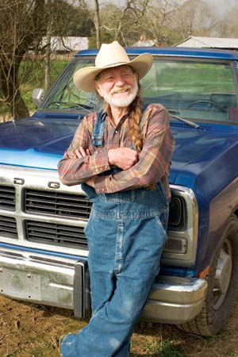

I believe nothing is as central to our well-being as food - who grows it and how. When produced with the interests of the eater in mind, food makes our bodies strong. When produced with the dream of passing the land on to the next generation, food strengthens local communities. And when produced with a long view of the planet’s health, food keeps our environment intact, even thriving.
Family farmers have always understood the direct connection between healthy soil, healthy food and healthy people - that’s why they take great measures to improve and protect their soil. The key to strengthening this fabric that holds our country together is to keep family farmers on this land, from coast to coast. It’s a solution to many of today’s most important concerns - climate change, fossil fuel dependence, childhood obesity and dwindling biodiversity.
In the coming months, Congress will seal the next farm bill, legislation so broad in scope that it touches each of us in many ways. When you hear “farm bill,” think beyond the farm. Think food bill, renewable energy bill, nutrition bill, environmental stewardship bill, anti-hunger bill.
Over the past several decades, the farm bill has served the interests of large-scale industrial agriculture with policies designed to produce cheap food and lots of it. This cheap food policy, however, comes with incredibly high external costs: a depleted countryside with fewer farmers, degraded soils and waterways, and public health disasters. A new farm bill - one that serves the interests of all Americans - with a vision toward sustainability, can help reverse these trends.
Instead of countless dying small towns across rural America, imagine the countryside dotted with thriving communities, all of them contributing to strong local economies. Imagine clean waterways, protected for generations to come. Imagine farmers markets in every community with fresh, locally grown food, free of chemicals and additives. Imagine powering your home and automobile with energy from renewable sources produced close to your home. Imagine your child’s school serving fresh, wholesome food from your neighbors’ farms. Imagine young people returning to the land to carry on the great tradition of farming. These dreams aren’t futile. They are possible with a farm bill that serves your interests over those of giant corporations.
If you want your grandchildren to inherit a nation with healthy soil, clean water and nutritious food, pick up the phone today and call your representatives in Congress. Tell them you want a farm bill that assists young people who want to start farming; one that restores fairness in the marketplace so family farmers can compete with giant food companies and factory farms; one that puts better food in our schools and rewards farmers who transition to sustainable methods. Let them know you want a farm bill for all, because the farm bill belongs to all of us.
For Congressional contact information, visit www.congress.org. To keep up with farm policy news, and find helpful tips for communicating with your representatives, check out the following sites:
|
 SAM EMERSON/GETTY IMAGES Agriculture activist Willie Nelson, president of Farm Aid, believes that "nothing is as central to our well-being as food - who grows it and how." Sign up for e-mail updates from www.farmaid.org. |
|
|